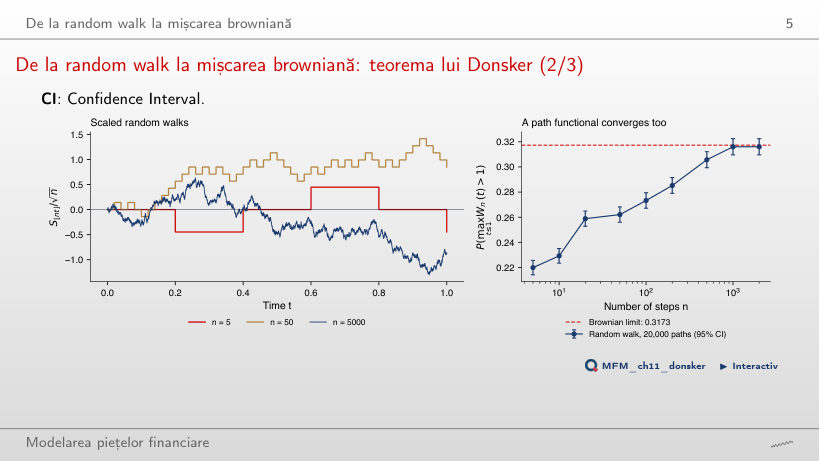
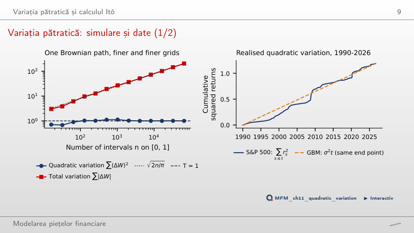
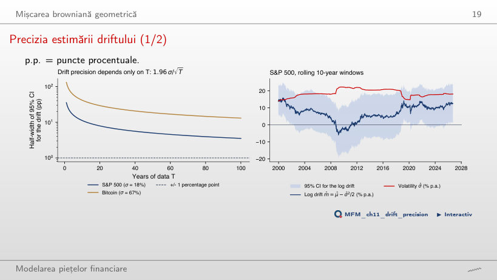
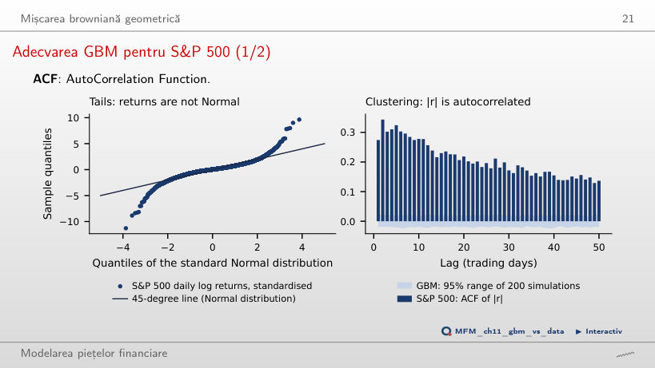
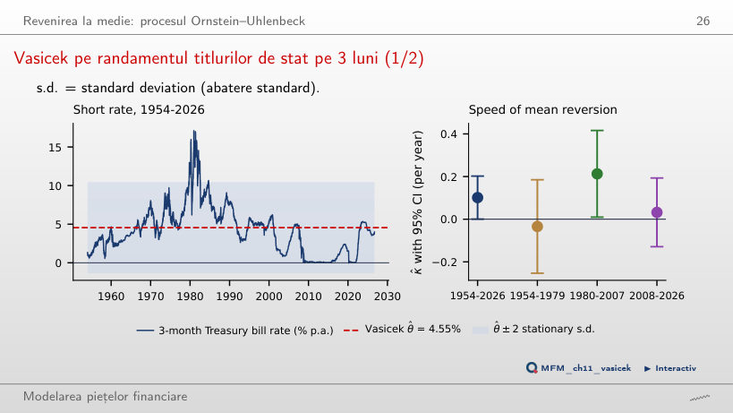
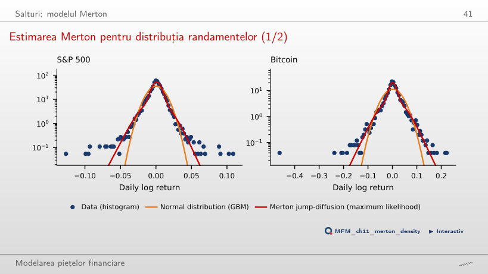
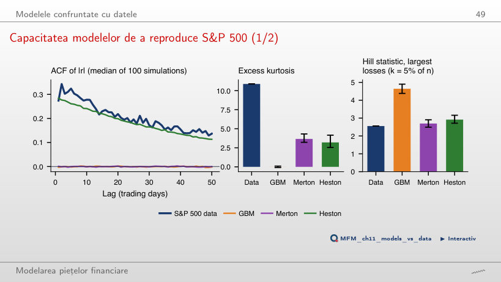
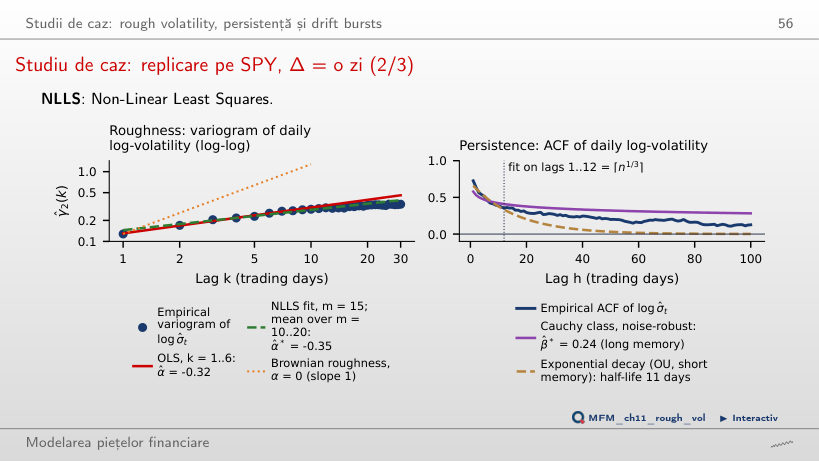
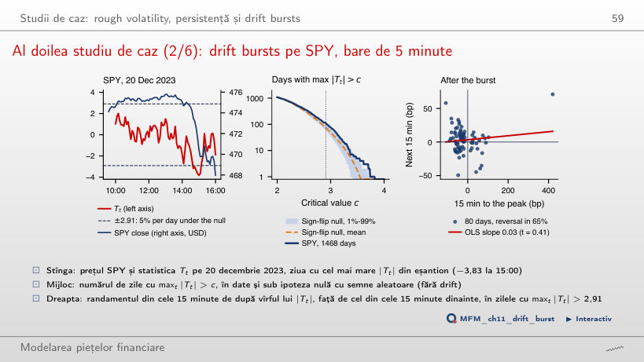

În stînga este slide-ul din curs, în dreapta aceeași figură, calculată în browser din aceleași date. Butonul ▶ modifică parametrul pas cu pas.
De la random walk la mișcarea browniană · Variația pătratică și calculul Itô · Mișcarea browniană geometrică · Revenirea la medie: procesul Ornstein–Uhlenbeck · Salturi: modelul Merton · Modelele confruntate cu datele · Studii de caz: rough volatility, persistență și drift bursts
De la random walk la mișcarea browniană
De la random walk la mișcarea browniană: teorema lui Donsker

Răspuns
Circa 0,0455. Principiul reflexiei dă P(max W(t) > 2) = 2[1 − Φ(2)] ≈ 0,0455, față de 0,3173 la a = 1. Valoarea 0,0228 = 1 − Φ(2) privește doar W(1), nu maximul întregii traiectorii. Valoarea 0,1587 înjumătățește greșit probabilitatea de la pragul 1: probabilitatea nu este invers proporțională cu pragul. Pe pagină, la a = 2, random walk-ul cu n = 2 000 de pași dă 0,042. Curbele random walk ilustrează convergența către reperul brownian; ele nu provin din eșantionarea aceleiași traiectorii browniene.
Variația pătratică și calculul Itô
Variația pătratică: simulare și date

Răspuns
Cu √2 ≈ 1,41. Media este n^(1 − p/2)·E|Z|^p, cu Z avînd distribuția Normală standard; pentru p = 1,5, factorul este 4^0,25 = √2. Factorul 4 ignoră micșorarea incrementelor; 1/√2 inversează sensul modificării. Relația privește media, nu o egalitate exactă pentru fiecare traiectorie: pe traiectoria din pagină, suma trece de la 9,75 cu 16 384 de intervale la 13,83 cu 65 536 de intervale (raport 1,42). Doar exponentul 2 dă o limită nedegenerată: Σ(ΔW)² tinde la T = 1 (1,006 pe grila cea mai fină), de aceea (dW)² = dt.
Mișcarea browniană geometrică
Precizia estimării driftului

Răspuns
Rămîne aceeași. Semilățimea este 1,96σ/√T: aproximativ 12,4 puncte procentuale în ambele cazuri. Dublarea volatilității compensează exact înjumătățirea lui 1/√T. «Se înjumătățește» ignoră modificarea volatilității; «se dublează» ignoră lungimea perioadei. Pentru S&P 500 (σ = 18%), 10 ani de date dau ±11,2 puncte procentuale, oricît de deasă este grila: cele 2 520 de randamente zilnice nu reduc această semilățime. Pe ferestre de 10 ani, driftul logaritmic variază între −6,0% (2009-03) și 15,8% (2000-09); cu această precizie, oscilațiile nu pot fi atribuite sigur unor schimbări ale driftului.
Adecvarea GBM pentru S&P 500

Răspuns
Circa 0,59 = 9 245 · 2(1 − Φ(4)), cu ambele cozi; o singură coadă ar da 0,29. În date sînt 62, iar cea mai rea zi este la −11,3 abateri standard; excesul de kurtosis este 10,9. ACF a lui |r| este 0,27 la lagul 1 și 0,14 la lagul 50, în timp ce banda GBM rămîne sub 0,024.
Revenirea la medie: procesul Ornstein–Uhlenbeck
Vasicek pe randamentul titlurilor de stat pe 3 luni

Răspuns
Nu. κ̂ = 0,101 (SE 0,051) corespunde unui timp de înjumătățire de 6,8 ani, iar coeficientul AR(1) zilnic este 0,99960, aproape o rădăcină unitară. Pe subperioade, κ̂ este −0,034, 0,213 și 0,032, iar două dintre cele trei intervale includ zero. Intervalul asimptotic pe 1954–2026 exclude zero la limită (0,101 − 1,96 · 0,051 = 0,001), dar lîngă o rădăcină unitară distribuția lui κ̂ nu este Normală și este deplasată în sus; testul bootstrap al ipotezei random walk dă p-value = 0,287.
Salturi: modelul Merton
Estimarea Merton pentru distribuția randamentelor

Răspuns
Circa 33,3%. Numărul zilnic de salturi are distribuția Poisson cu media 102/252 = 0,405; probabilitatea cerută este 1 − exp(−102/252) ≈ 33,3%. Valoarea 40,5% confundă numărul mediu de salturi cu probabilitatea cel puțin unui salt; 66,7% este probabilitatea niciunui salt. Un salt al modelului nu este automat un crah: abaterea standard estimată a mărimii saltului este 1,44%. Salturile explică 71% din dispersie și ajustează forma distribuției marginale; ele nu reproduc volatility clustering. Excesul de kurtosis implicat este 3,7, față de 10,9 în date. La λ = 0, păstrînd media și dispersia modelului Merton estimat, log-verosimilitatea S&P 500 este 28 291, față de 29 500 la estimarea MLE; pentru GBM reestimat separat, este 28 300.
Modelele confruntate cu datele
Capacitatea modelelor de a reproduce S&P 500

Răspuns
Ajunge în jurul lui zero. Permutarea distruge ordinea temporală care produce volatility clustering, deci ACF ajunge în jurul lui zero, cu fluctuații de eșantionare, ca la GBM și Merton. Valoarea 0,28 (mediana Heston fără permutare, față de 0,27 în date) presupune greșit că păstrarea distribuției empirice păstrează și dependența temporală. Excesul de kurtosis al fiecărei simulări rămîne neschimbat. Merton reproduce statistica Hill (2,70 față de 2,56) și asimetria (−0,32 față de −0,36). Cu acești parametri, niciuna dintre cele 100 de simulări ale celor trei modele nu atinge excesul de kurtosis din date, 10,88.
Studii de caz: rough volatility, persistență și drift bursts
Studiu de caz: replicare pe SPY, Δ = o zi

Răspuns
Ajustarea se îmbunătățește la lagul 100, dar se înrăutățește la lagul 1. Pentru curba desenată, A·exp(−κh), valoarea la lagul 100 crește de la circa 0,0014 la 0,073, apropiindu-se de 0,13 în date; la lagul 1 scade de la circa 0,661 la 0,484, îndepărtîndu-se de circa 0,73 în date. Ajustarea pe mai multe laguri nu garantează o apropiere mai bună la fiecare lag: o singură exponențială nu urmărește și scăderea rapidă de la primele laguri, și coada lentă. Reperul OU normalizat, exp(−κh), este distinct: cu panta estimată pe 12 laguri (timp de înjumătățire 11 zile) dă 0,002 la lagul 100, iar cu panta estimată pe 60 de laguri (36 de zile) dă 0,149. Clasa Cauchy dă β̂ = 0,26 și β̂* = 0,24, ambele sub 1, în acord cu memoria lungă; variograma dă α̂ = −0,32 (OLS) și −0,35 (NLLS), deci o traiectorie mai rugoasă decît cea browniană.
Al doilea studiu de caz (2/6): drift bursts pe SPY, bare de 5 minute

Răspuns
Numărul de drift bursts adevărate nu este identificat de această procedură. Cele 109 zile sînt candidate; diferența 109 − 73,84 = 35,16 este un exces descriptiv față de nulul cu semne aleatoare, care păstrează modulele randamentelor, dar elimină driftul, asimetria salturilor și efectul de levier. Pragul este calibrat pentru aproximativ 5% depășiri ale maximului zilnic sub acest nul, nu pentru 5% alarme false printre zilele selectate și nici pentru orice proces fără drift burst. Nicio replicare din cele 200 nu atinge 109 zile (maximul este 100); p-value Monte Carlo este circa 0,005. Acest rezultat nu identifică mecanismul care produce excesul. Revenirea, prezentă în 65% din cele 80 de zile cu fereastră completă după vîrf, este tot descriptivă: vîrful este ales retrospectiv, iar sub ipoteza nulă, cu aceeași selecție, proporția medie este 56,5%; panta este doar 0,03, iar pe tranzacțiile E-mini S&P 500 articolul găsește −0,26.
Randamente logaritmice zilnice pînă la 18 septembrie 2026: S&P 500 (din 1990) și Bitcoin (din 2014), prețuri EODHD. Randamentul titlurilor de stat SUA pe 3 luni: FRED, seria DTB3, 1954–2026. Studiile de caz: bare SPY de 5 minute, EODHD, octombrie 2020 – septembrie 2026. Simulările (random walk, mișcare browniană, GBM, Merton, Heston) folosesc aceleași seed-uri ca graficele din curs.